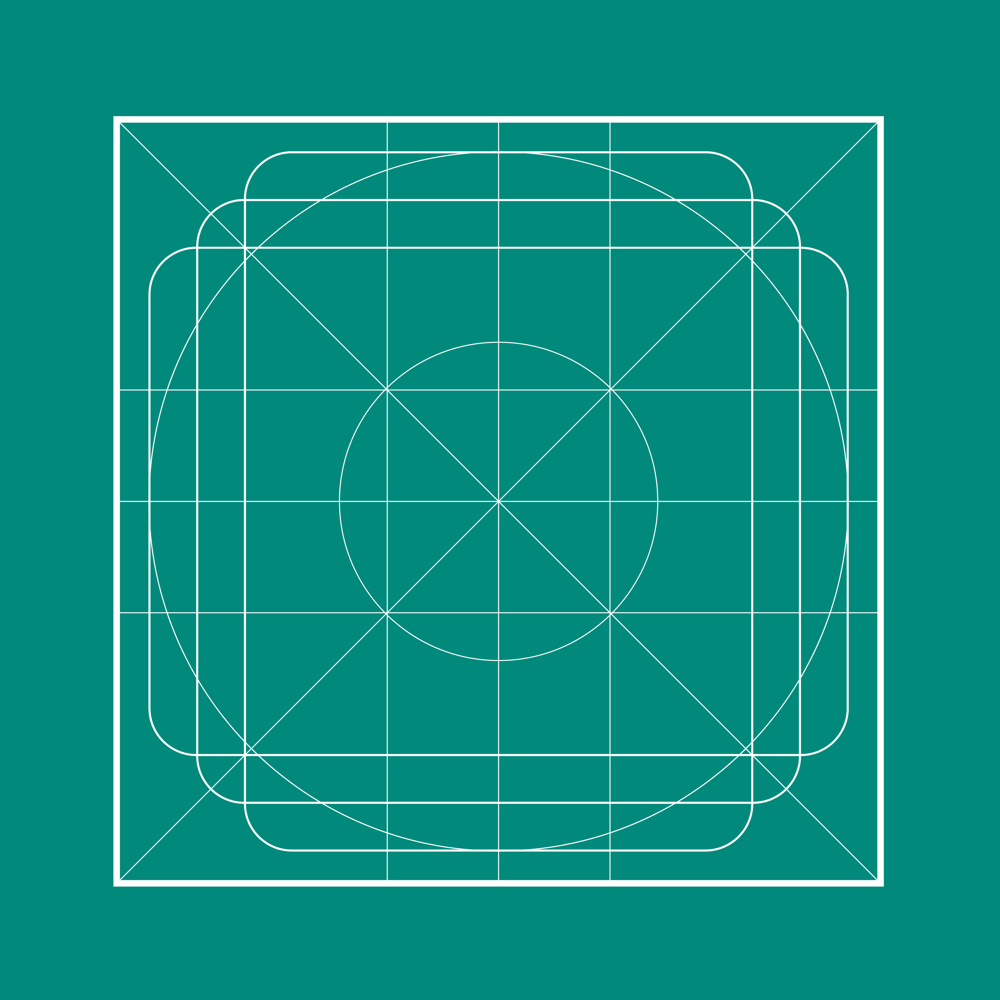

Material icons use geometric shapes to visually represent core ideas, capabilities, or topics.
Product icons are the visual expression of a brand’s products, services, and tools.
Product icons are the visual expression of a brand’s products, services, and tools.
Sizing
Product icons are 48dp; system icons are 24dp
Icons on light backgrounds
Icon state | Opacity |
Active + focused | 87% |
Active + unfocused | 54% |
Inactive | 38% |
Icons on dark backgrounds
Icon state | Opacity |
Active + focused | 100% |
Active + unfocused | 70% |
Inactive | 50% |
